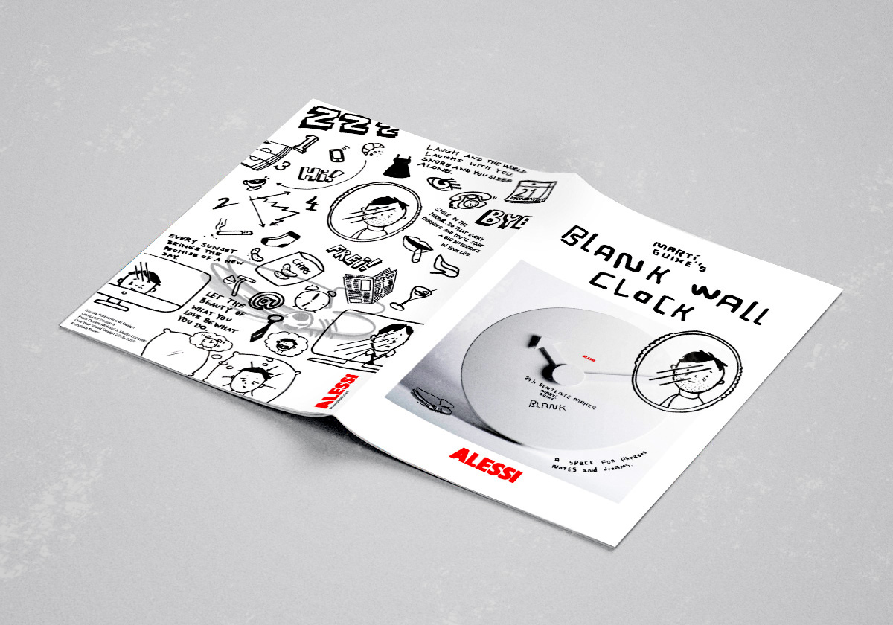
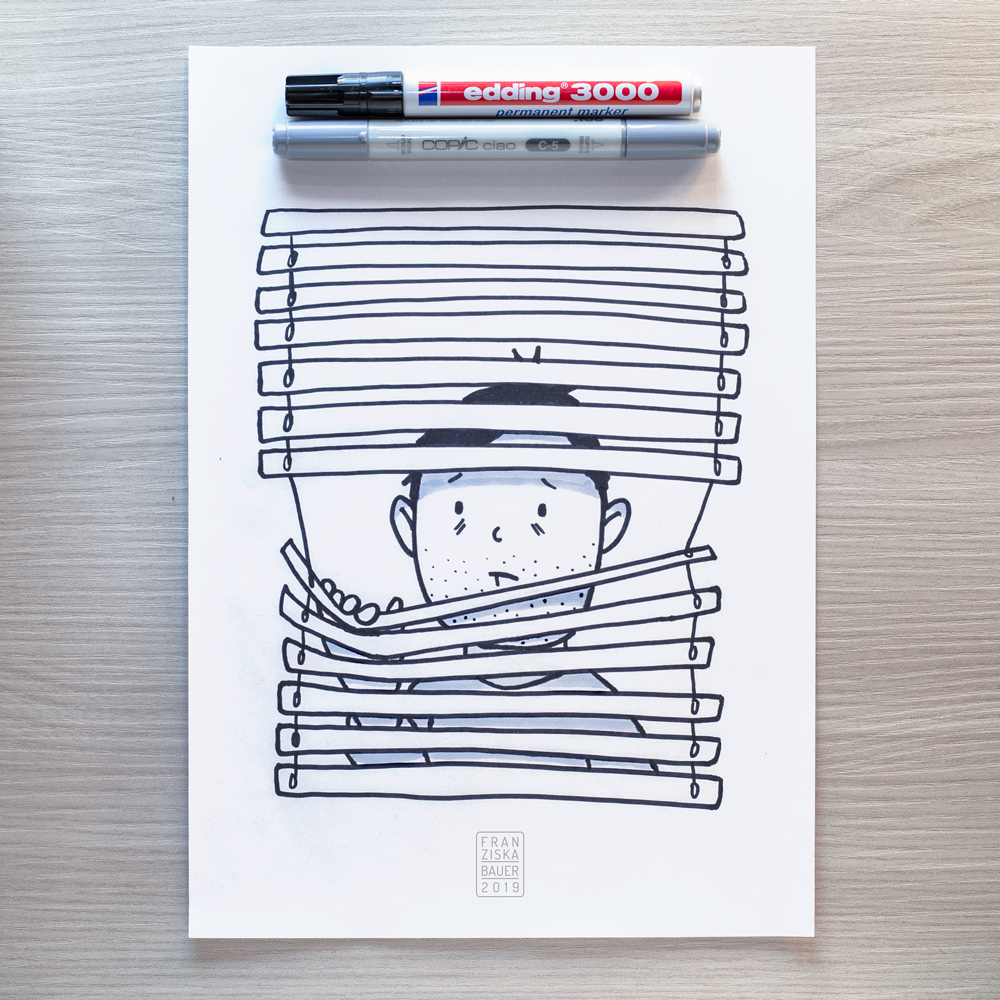
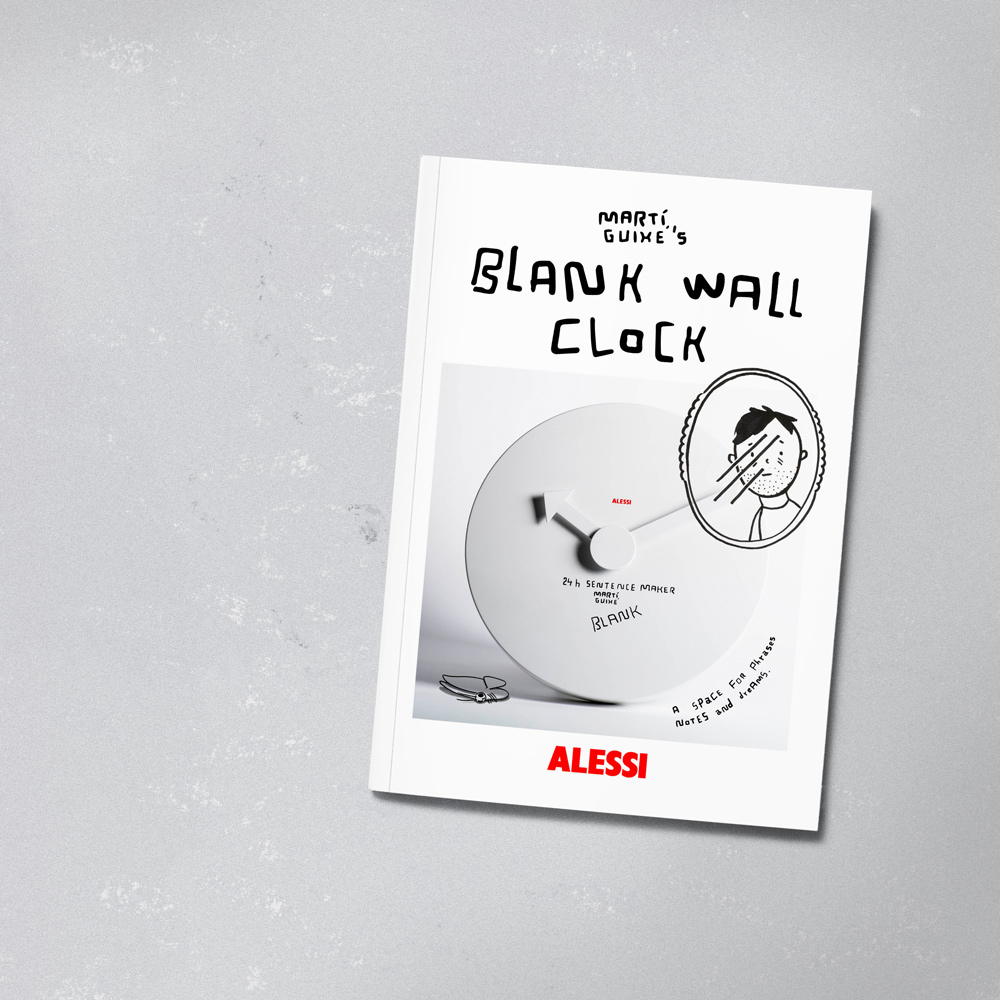
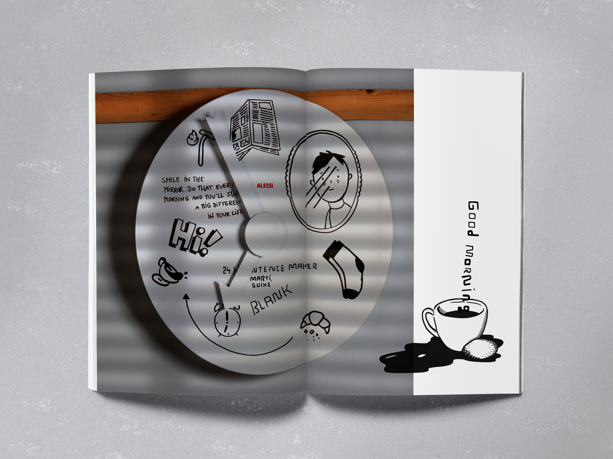
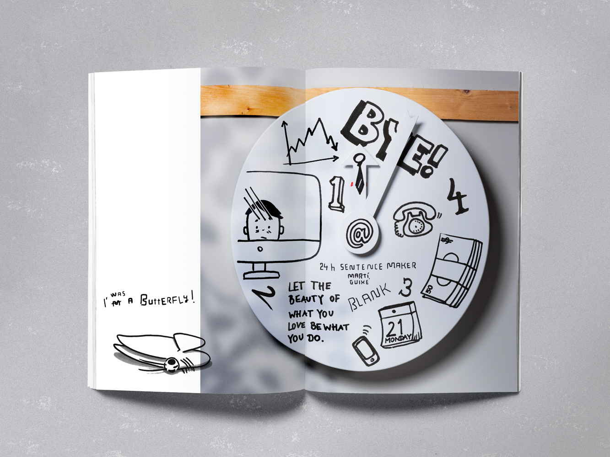
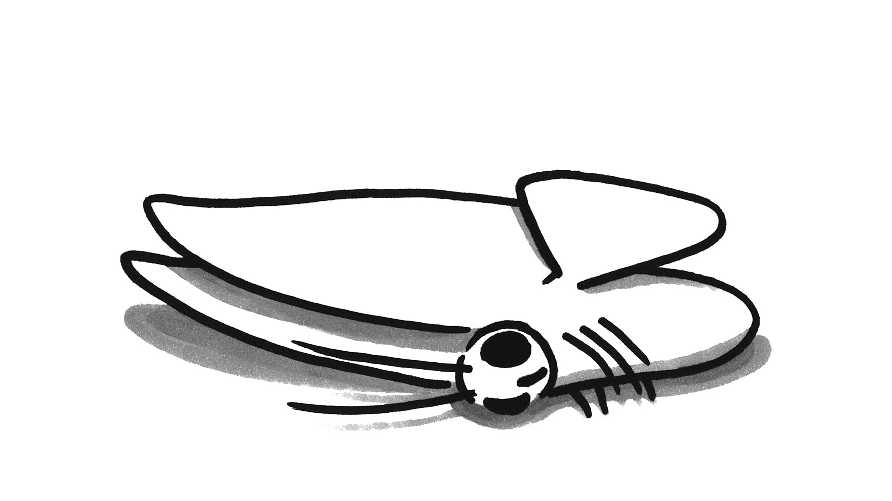
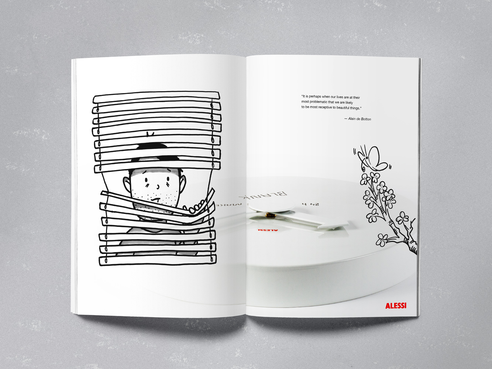
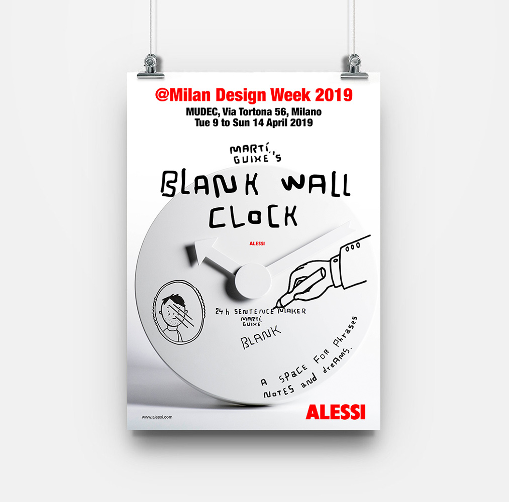
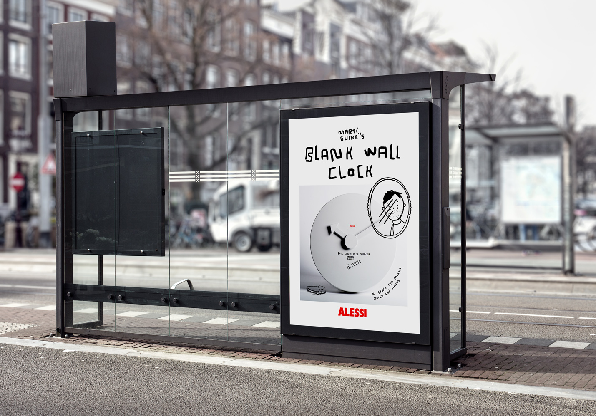

Back
Project
Promotion booklet for Martí Guixé's Blank Wall Clock
Client
Scuola Politecnica di Design/
Prof. Davide Molinari
Location
Milan
Year
2019
Tags
#Promotion #Advertisement
Description
Martí Guixé’s Blank Wall Clock (ALESSI) was promoted in an A5 booklet. The clock is merely a white surface with two clock hands on which one can draw. As a space for “phrases, notes, and dreams” as promoted by ALESSI, I decided to pick up the idea of dreams and of illustrations which are typical for Martí Guixé. I drew a somewhat cynical story of a man and his desperate everyday life. Throughout the story, it won’t be his life that is changing but rather his mindset.